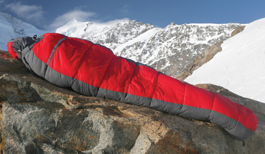

Module 1—Thinking Energy
Lesson 3—Specific Heat Capacity
 Get Focused
Get Focused

© Jakub Cejpek/shutterstock
One of the essential pieces of gear for an ecotourist is a sleeping bag suited to the climate. A sleeping bag that is too warm will cause you to sweat, and one that makes you feel too cool will result in you shivering through the night. Sleeping bags are rated according to the materials used in their construction and can be suitable for temperatures ranging from −40°C to +15°C.
A sleeping bag is designed to insulate a person by attempting to prevent an energy exchange between the person and the surroundings. In Lesson 2 you learned about the design of a calorimeter. It might sound like the insulating characteristics of a sleeping bag are similar to those of a calorimeter—both are designed to prevent an exchange of thermal energy between the "contents" and its surroundings.
In this lesson you will test a calorimeter that you construct using data collected while performing an experiment. You will also investigate the specific heat capacity of substances and relate this property to the selection of materials that may be used to design a sleeping bag.
Consider the following question as you complete Lesson 3:
- How can knowledge of specific heat capacity be used in the design of a sleeping bag?
 Module 1: Lesson 3 Assignments
Module 1: Lesson 3 Assignments
Download a copy of the Module
1: Lesson 3 Assignment to your computer at this time. You will
receive further instructions on how to complete this assignment later
in the lesson. In this lesson, you will also receive further
instructions on and you will complete part of the Module 1 Assessment:
Choice of Sleeping Bag.